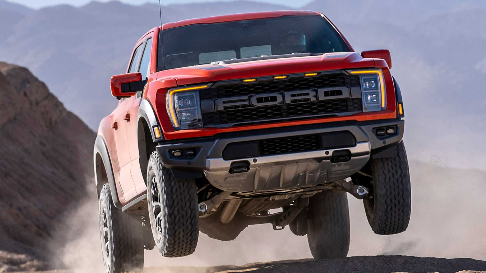
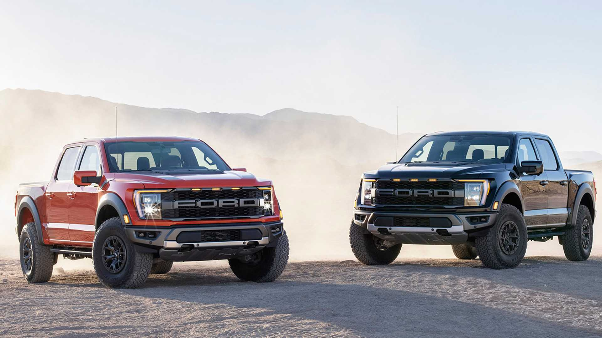
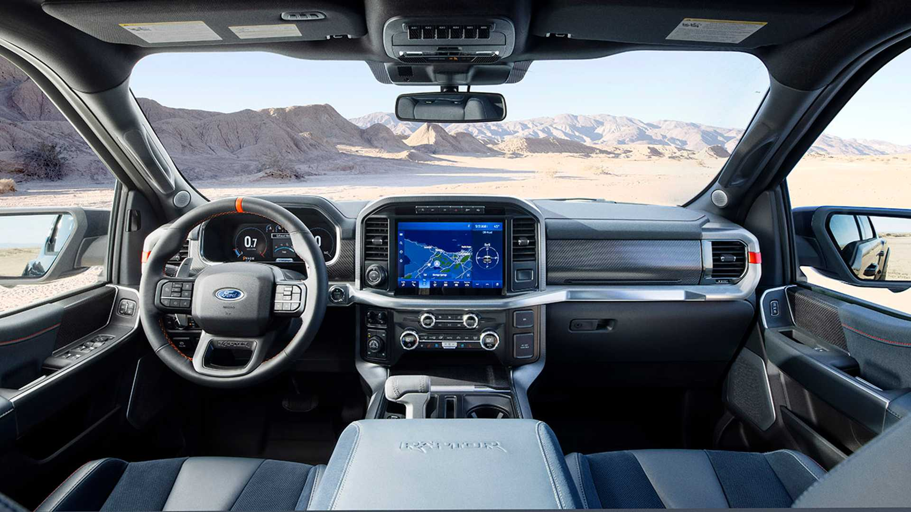
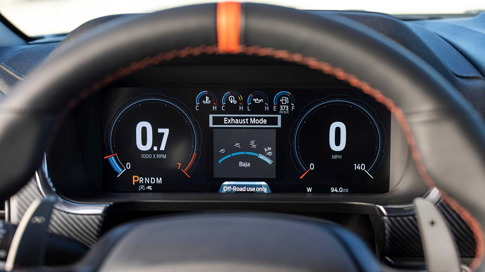
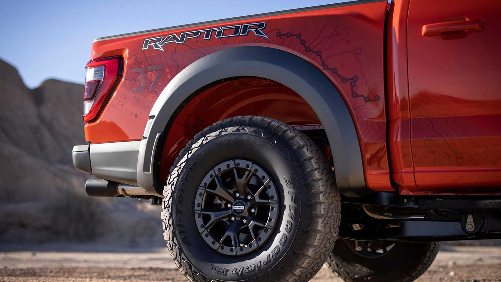
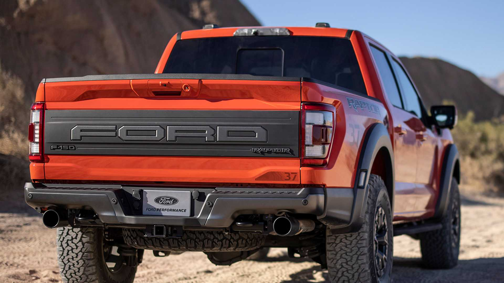
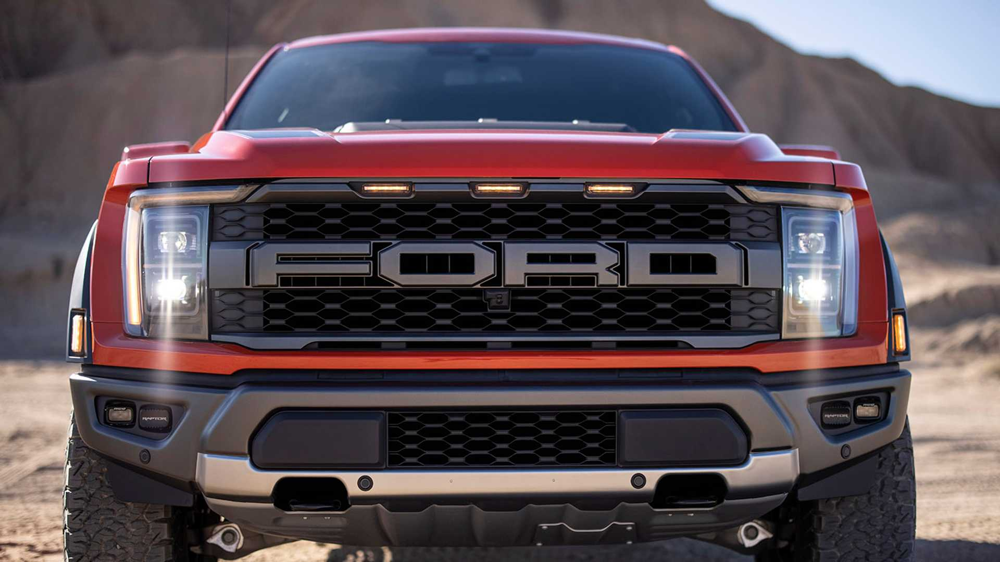
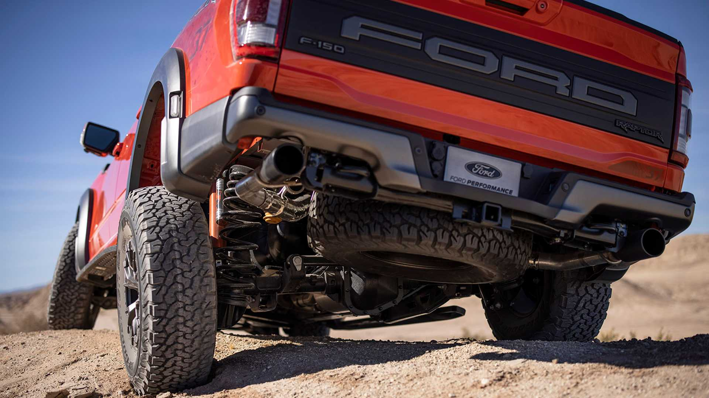
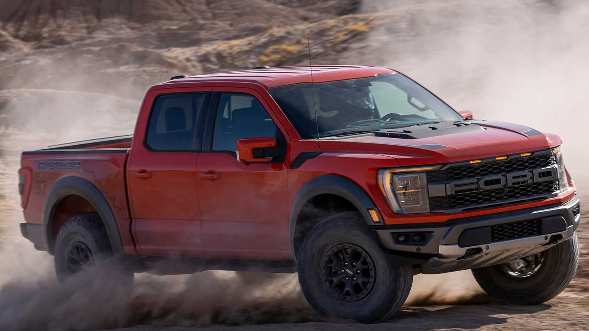

La Ram 1500 TRX se presentó en agosto de 2020 como la pick-up de producción más potente del mundo: tiene un Hemi V8 6.2 Supercharged (702 cv y 881 Nm). Y ya está en planes para llegar a la Argentina.
Su lanzamiento podría producirse a fines de 2021 o comienzos de 2022: “Está en estudio. Nosotros queremos ofrecerla y se está estudiando”, aseguró Pablo García Leyenda, director Comercial de Fiat, Jeep y Ram.
El nombre TRX es todo un desafío a su rival más directa: la Ford F-150 Raptor. TRX es un apócope de Tyrannosaurus Rex, un depredador mucho más grande y poderoso que el famoso Velociraptor que homenajea Ford.
Eso mas: los compradores de la Ram 1500 TRX podrán también hacerle bromas a sus amigos con Ford. Al levantar el capot y el cobertor del motor, se encontrarán con un dibujo grabado sobre una tapa de plástico: un T-Rex manducándose a un Velociraptor.
F-150 Raptor









Ford presentó la nueva F-150 Raptor, la flamante generación de su pick-up full-size deportiva. La Raptor se renovó por completo, pero al menos en la versión presentada hoy mantendrá el conocido motor EcoBoost V6 3.5 biturbo. Aunque para más adelante, se espera la llegada de una versión tope de gama con un motor V8 más potente. Se llamará Raptor R y se presentará en 2022. La nueva F-150 Raptor V6 (2021) estrena una nueva suspensión trasera multitrazos, con un mayor recorrido vertical para las ruedas y nuevos amortiguadores Fox. Con respecto al motor EcoBoost V6, Ford no brindó mayores datos técnicos que estos: "Entrega mejor torque en baja y permite una mayor capacidad de remolque, además de aumentar su capacidad de carga". No se difundieron datos de potencia ni torque. La nueva F-150 Raptor llegará a la Argentina para reemplazar al modelo actual. De esta manera, complementará la oferta de la actual F-150 Lariat Luxury, que ya está en preventa en Argentina.